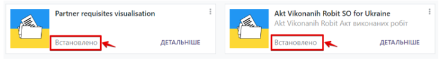
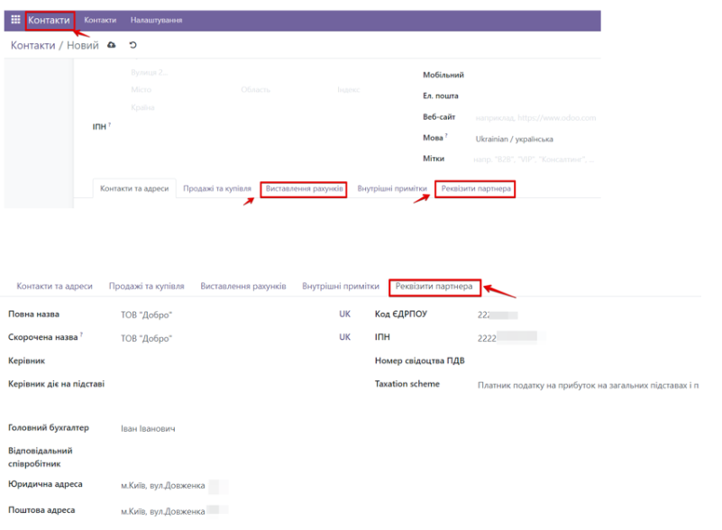
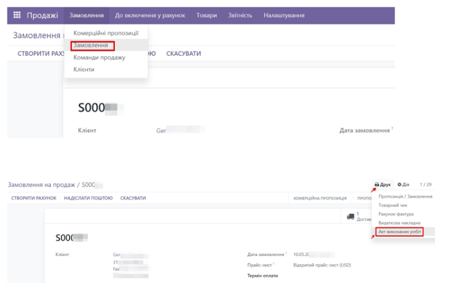

Description of the Module
The Act of work performed (services rendered) belongs to the primary documents and records the facts of a business transaction.
This module provides printing of the form of the accounting document of Ukraine "Act of work performed" from the Sale order.
About Kitworks
We are Ukrainian software developing company working with odoo versions 10 to 18.
We specialize on solutions for Ukrainian market, however often do much more.
Please see all of our Ukrainian modules here.
Please see all of our modules here.
Would be glad to talk about odoo customization and development for your company or your clients.
Feel free to contact us by:
Email: info@kitworks.systems
Skype: myshyak_kiev
WhatsApp: https://wa.me/380503342348
Telegram: https://t.me/myshyak
Support
We do provide free bugfixes and updates for all our modules during 1 year after purchase.
The warranty is provided on clean odoo instance.
We would not help you (for free) in case our modules do not work on your server or conflict with any other modules.
Also, we are ready to consider your feature requests to our modules, and if we would find them useful we can consider including them to new releases.
Also, we do provide all types of odoo support services, like installing odoo instance on your server, supporting your odoo server, custom development.
Prepaid support and development packages are available upon request.
Module settings
To start working with this module, go to the Add-ons section, enter "Akt Vikonanih Robit SO" and "Partner requisites visualization" in the search field, and install the modules you found.
The next step is to fill in the counterparty (company) data. To do this, go to the Contacts section, select the desired contact or create a new one, and add the necessary information on the Partner details tab. If you wish, you can also specify bank accounts in the Billing tab.
To print the Certificate of Completion, go to the Sales/Orders/Orders section and click the Print/Certificate of Completion button directly in the sales order.
The form will be downloaded in pdf format. You can then print it out or send it to your counterparties.